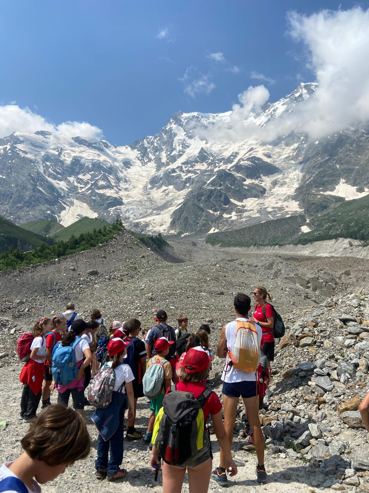
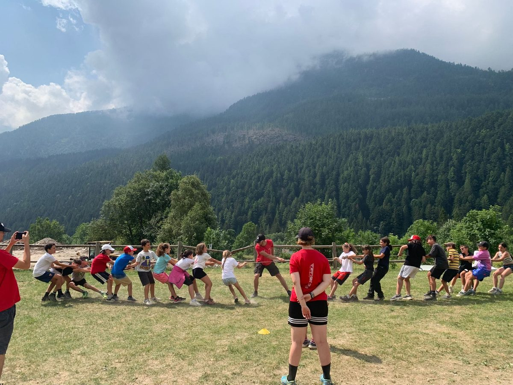
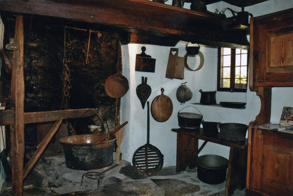

Mountains with children
Montagne per famiglie ai piedi del Monte Rosa: percorsi facili, esperienze guidate e un villaggio dove i piccoli scoprono natura e storia in sicurezza.
Per le famiglie
Facilità e sicurezza, senza rinunciare alla meraviglia
Macugnaga è la montagna a misura di famiglia: passeggiate nel Dorf, sentieri adatti anche ai più piccoli, visite alla Casa Museo e alla gold mine, attività all’aria aperta a contatto con la natura nel clima fresco dell’estate alpina.
Perfetta per gite in montagna e weekend da Milano, dal Lake Maggiore, Varese e Novara — senza stress e senza alpinismo tecnico.
- Operatori autorizzati e guide qualificate
- Proposte chiare per età e difficoltà
- Online booking con conferma immediata

Idee per una giornata in famiglia
Tre spunti per vivere la montagna con i bambini: gioco, cultura e piccola avventura.

Natura e gioco
Uscite soft tra boschi e prati: esperienze a contatto con la natura, al ritmo dei bambini.

Casa Museo
Book online: storie walser da raccontare ai più piccoli.

Alla ricerca dell’oro
Un’avventura che resta impressa nella memoria.
FAQ
Frequently asked questions per le famiglie
Is Macugnaga suitable as a mountain destination with children?
Sì: percorsi facili, villaggio accogliente ed esperienze guidate. Ideale tra le montagne per famiglie del Monte Rosa, anche per gite da Milano, dal Lake Maggiore, Varese e Novara.
Quali esperienze in famiglia si possono prenotare?
Natura e gioco, Walser House Museum, gold mine (anche con passeggino), ricerca dell’oro e altre attività. Vedi Experiences.
Come organizzare un weekend in montagna con i bambini?
Alloggio a Macugnaga, una o due esperienze prenotate online e passeggiate in paese. Guida pratica su Weekend.